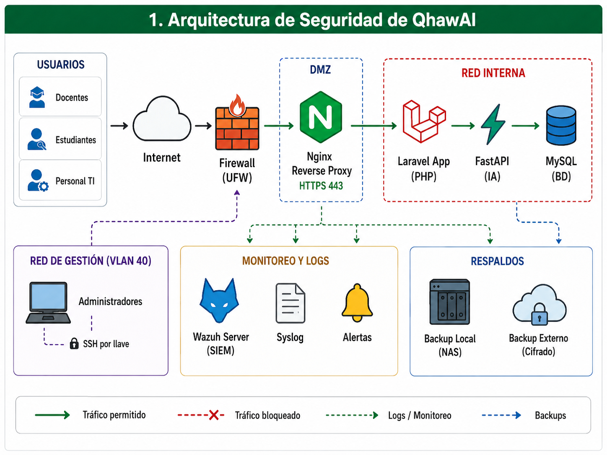
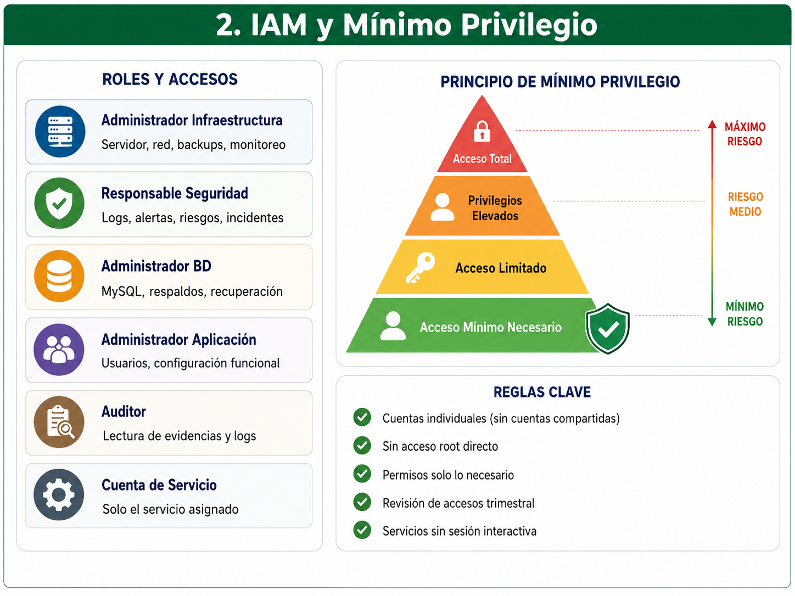
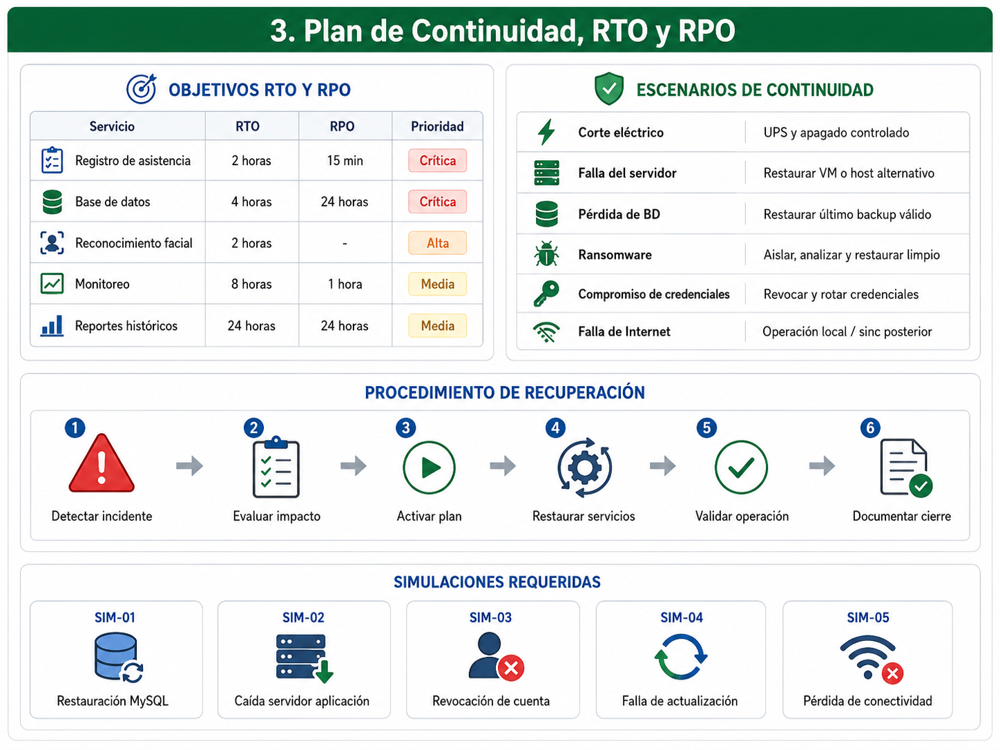
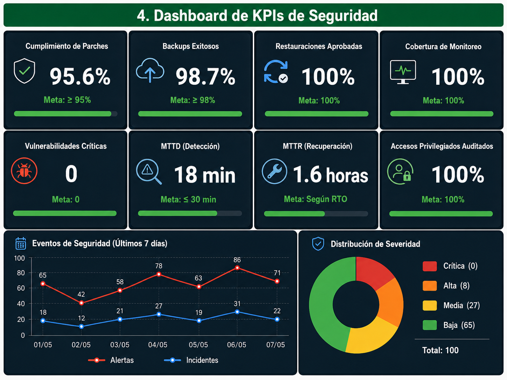
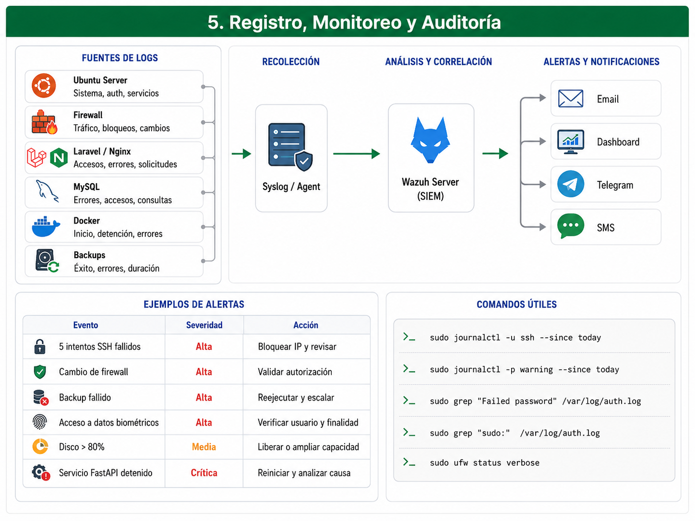
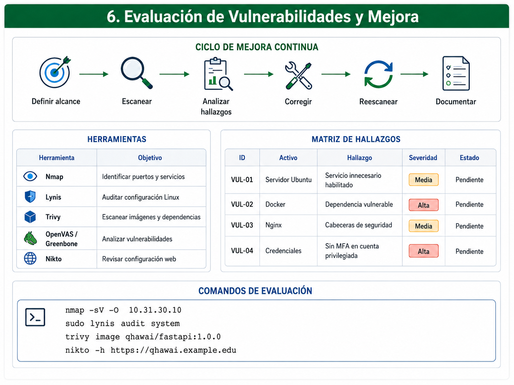
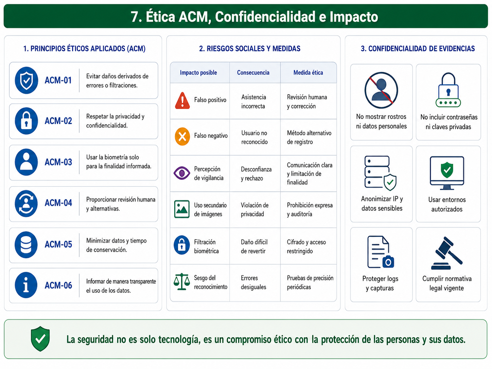

Entregable 5 — Implementación, Monitoreo y Ética de Seguridad
Implementación de controles técnicos, mínimo privilegio, gestión de parches, continuidad, monitoreo, auditoría, evaluación de vulnerabilidades y análisis ético para QhawAI.
Resumen Ejecutivo
El presente entregable documenta los controles técnicos y organizacionales preparados para proteger la infraestructura tecnológica de QhawAI, sistema inteligente de control de asistencia mediante reconocimiento facial.
La propuesta considera gestión de identidades y accesos, autenticación segura, control basado en roles, mínimo privilegio, cifrado, firewall, protección de servidores, copias de seguridad, gestión de parches, monitoreo, registro centralizado y evaluación de vulnerabilidades.
Debido a que QhawAI procesa datos personales, registros académicos y plantillas biométricas, se incorporan controles específicos de confidencialidad, integridad, disponibilidad, trazabilidad y protección de la privacidad.
El entregable también establece objetivos de continuidad mediante RTO y RPO, indicadores cuantitativos de seguridad y principios éticos basados en el Código de Ética de la ACM.
1. Alcance de la Implementación
El alcance comprende los activos tecnológicos, servicios, credenciales, datos y usuarios autorizados relacionados con la operación de QhawAI.
| Componente | Función | Control principal | Estado |
|---|---|---|---|
| Servidor Ubuntu | Host de servicios. | Hardening, parches, firewall y logs. | Preparado para validación. |
| Laravel y Nginx | Aplicación y proxy web. | TLS, permisos, logs y control de rutas. | Preparado para validación. |
| FastAPI | Procesamiento biométrico. | Red interna, autenticación y límites. | Preparado para validación. |
| MySQL | Persistencia de datos. | Usuarios mínimos, cifrado y backup. | Preparado para validación. |
| Equipos de red | Conectividad y segmentación. | ACL, SSH, SNMPv3 y syslog. | Definido en E4. |
| Firebase FCM | Notificaciones push. | Protección de tokens y credenciales. | Servicio externo controlado. |
| Backups | Recuperación de datos. | Cifrado, retención y prueba de restauración. | Pendiente de evidencia. |
2. Arquitectura de Seguridad

| Capa | Controles | Objetivo |
|---|---|---|
| Identidad | RBAC, MFA, cuentas individuales. | Evitar accesos no autorizados. |
| Red | VLAN, ACL, firewall, VPN y SSH. | Reducir exposición y movimiento lateral. |
| Servidor | Hardening, parches, UFW y Fail2ban. | Proteger el sistema operativo. |
| Aplicación | TLS, secretos protegidos y logs. | Proteger servicios y sesiones. |
| Datos | Cifrado, permisos y backups. | Preservar confidencialidad e integridad. |
| Monitoreo | Wazuh, syslog, métricas y alertas. | Detectar y responder a eventos. |
3. Gestión de Identidades y Accesos

3.1 Roles de acceso
| Rol | Acceso permitido | Restricción |
|---|---|---|
| Administrador de infraestructura | Servidor, red, backups y monitoreo. | No modifica registros académicos. |
| Responsable de seguridad | Logs, alertas, riesgos e incidentes. | No administra datos funcionales. |
| Administrador de base de datos | MySQL, respaldos y recuperación. | No administra firewall ni red. |
| Administrador de aplicación | Usuarios y configuración funcional. | Sin acceso root al servidor. |
| Auditor | Acceso de lectura a evidencias y logs. | No puede modificar configuraciones. |
| Cuenta de servicio | Solo el servicio asignado. | Sin sesión interactiva. |
3.2 Creación de usuarios técnicos
sudo adduser admin_infra sudo adduser operador_backup sudo adduser auditor_seguridad sudo groupadd infraestructura sudo groupadd backups sudo groupadd auditoria sudo usermod -aG infraestructura admin_infra sudo usermod -aG backups operador_backup sudo usermod -aG auditoria auditor_seguridad
3.3 Configuración limitada de sudo
sudo visudo # Acceso administrativo autorizado %infraestructura ALL=(ALL:ALL) ALL # El operador solo puede ejecutar el backup operador_backup ALL=(root) /usr/local/bin/qhawai-backup.sh # El auditor no recibe privilegios de escritura
3.4 Reglas de mínimo privilegio
3.5 Usuario limitado en MySQL
CREATE USER 'qhawai_app'@'10.31.30.%' IDENTIFIED BY '[CLAVE_SEGURA]'; GRANT SELECT, INSERT, UPDATE, DELETE ON qhawai.* TO 'qhawai_app'@'10.31.30.%'; FLUSH PRIVILEGES;
4. Acceso Remoto y Cifrado
4.1 Hardening de SSH
sudo nano /etc/ssh/sshd_config PermitRootLogin no PasswordAuthentication no PubkeyAuthentication yes MaxAuthTries 3 LoginGraceTime 30 AllowGroups infraestructura X11Forwarding no PermitEmptyPasswords no ClientAliveInterval 300 ClientAliveCountMax 2 sudo sshd -t sudo systemctl restart ssh
4.2 Protección con Fail2ban
sudo apt update sudo apt install fail2ban -y sudo systemctl enable fail2ban sudo systemctl start fail2ban sudo fail2ban-client status sudo fail2ban-client status sshd
4.3 Cifrado de comunicaciones
| Comunicación | Protocolo seguro | Control |
|---|---|---|
| Usuario – aplicación | HTTPS / TLS | Certificado válido y redirección HTTP. |
| Administrador – servidor | SSH con llaves | Sin acceso root ni contraseña. |
| Red – monitoreo | SNMPv3 | Autenticación y privacidad. |
| Backup externo | TLS, SFTP o VPN | Copia cifrada. |
| Aplicación – MySQL | Red interna restringida | Puerto no publicado. |
4.4 Configuración de TLS en Nginx
server {
listen 80;
server_name qhawai.example.edu;
return 301 https://$host$request_uri;
}
server {
listen 443 ssl http2;
server_name qhawai.example.edu;
ssl_certificate /etc/letsencrypt/live/qhawai/fullchain.pem;
ssl_certificate_key /etc/letsencrypt/live/qhawai/privkey.pem;
ssl_protocols TLSv1.2 TLSv1.3;
add_header X-Content-Type-Options nosniff always;
add_header X-Frame-Options SAMEORIGIN always;
add_header Referrer-Policy strict-origin-when-cross-origin always;
location / {
proxy_pass http://127.0.0.1:8080;
proxy_set_header Host $host;
proxy_set_header X-Forwarded-Proto https;
proxy_set_header X-Real-IP $remote_addr;
}
}
4.5 Protección de datos en reposo
Los respaldos, secretos, plantillas biométricas y archivos críticos deberán almacenarse con permisos restrictivos y cifrado cuando corresponda.
sudo mkdir -p /srv/qhawai/backups
sudo chown root:backups /srv/qhawai/backups
sudo chmod 750 /srv/qhawai/backups
# Ejemplo de cifrado de archivo de backup
gpg --symmetric \
--cipher-algo AES256 \
qhawai-backup.sql.gz
5. Firewall y Protección de Servicios
5.1 Política predeterminada
sudo ufw default deny incoming sudo ufw default allow outgoing sudo ufw allow from 10.31.40.0/24 to any port 22 proto tcp sudo ufw allow from 10.31.10.0/24 to any port 443 proto tcp sudo ufw allow from 10.31.50.0/24 to any port 443 proto tcp sudo ufw allow from 10.31.60.10 to any port 1514 proto tcp sudo ufw deny 3306/tcp sudo ufw deny 8000/tcp sudo ufw logging on sudo ufw enable sudo ufw status verbose
5.2 Matriz de exposición
| Servicio | Puerto | Origen permitido | Exposición pública |
|---|---|---|---|
| HTTPS QhawAI | 443 | Usuarios autorizados. | Sí, mediante proxy protegido. |
| SSH | 22 | VLAN Gestión TI. | No. |
| FastAPI | 8000 | Laravel o red de servicios. | No. |
| MySQL | 3306 | Servidor de aplicación. | No. |
| Wazuh agente | 1514 | Servidor de monitoreo. | No. |
6. Seguridad de Contenedores
Los servicios contenerizados deberán utilizar imágenes verificadas, versiones específicas, límites de recursos y usuarios sin privilegios administrativos.
services:
qhawai-ia:
image: qhawai/fastapi:1.0.0
container_name: qhawai-ia
user: "1001:1001"
read_only: true
cap_drop:
- ALL
security_opt:
- no-new-privileges:true
mem_limit: 4g
cpus: 2.0
restart: unless-stopped
networks:
- red_interna
healthcheck:
test: ["CMD", "curl", "-f", "http://localhost:8000/health"]
interval: 30s
timeout: 5s
retries: 3
networks:
red_interna:
internal: true
7. Implementación de Copias de Seguridad
7.1 Estrategia 3-2-1
| Información | Frecuencia | Destino local | Destino externo | Retención |
|---|---|---|---|---|
| Base de datos | Diaria. | NAS cifrado. | Copia externa cifrada. | 30 días. |
| Máquinas virtuales | Semanal. | NAS. | Copia mensual. | 8–12 semanas. |
| Configuraciones | Después de cada cambio. | Repositorio interno. | Copia cifrada. | 10 versiones. |
| Logs críticos | Continua o diaria. | Servidor de monitoreo. | Archivo protegido. | 90–180 días. |
7.2 Script de backup de MySQL
#!/usr/bin/env bash
set -euo pipefail
FECHA="$(date +%Y-%m-%d_%H-%M-%S)"
DESTINO="/srv/qhawai/backups"
ARCHIVO="${DESTINO}/qhawai_${FECHA}.sql.gz"
mkdir -p "${DESTINO}"
mysqldump \
--single-transaction \
--quick \
--lock-tables=false \
--defaults-extra-file=/root/.my.cnf \
qhawai | gzip > "${ARCHIVO}"
sha256sum "${ARCHIVO}" > "${ARCHIVO}.sha256"
find "${DESTINO}" \
-type f \
-name "qhawai_*.sql.gz" \
-mtime +30 \
-delete
echo "Backup completado: ${ARCHIVO}"
7.3 Validación del backup
sha256sum -c qhawai_2026-01-01_00-00-00.sql.gz.sha256 gunzip -c qhawai_2026-01-01_00-00-00.sql.gz \ | mysql \ --defaults-extra-file=/root/.my.cnf \ qhawai_restauracion
8. Gestión de Parches y Actualizaciones
8.1 Procedimiento
| Paso | Actividad | Responsable | Evidencia |
|---|---|---|---|
| 1 | Identificar actualización y severidad. | Infraestructura. | Boletín o ticket. |
| 2 | Revisar impacto y compatibilidad. | Infraestructura y aplicación. | Evaluación técnica. |
| 3 | Realizar backup o snapshot. | Infraestructura. | Registro de backup. |
| 4 | Probar en entorno controlado. | Equipo técnico. | Resultado de prueba. |
| 5 | Aplicar en ventana autorizada. | Infraestructura. | Registro de cambio. |
| 6 | Validar servicios y documentar. | Infraestructura y auditor. | Acta de cierre. |
8.2 Automatización controlada
sudo apt update sudo apt install unattended-upgrades apt-listchanges -y sudo dpkg-reconfigure unattended-upgrades sudo systemctl status unattended-upgrades sudo unattended-upgrade --dry-run --debug
8.3 Plazos propuestos
| Severidad | Plazo de corrección | Aprobación |
|---|---|---|
| Crítica | Máximo 72 horas. | Prioritaria. |
| Alta | Máximo 15 días. | Ventana programada. |
| Media | Máximo 30 días. | Mantenimiento regular. |
| Baja | Siguiente ciclo de mantenimiento. | Planificada. |
9. Plan de Continuidad y Recuperación

9.1 Objetivos RTO y RPO
| Servicio | RTO propuesto | RPO propuesto | Prioridad |
|---|---|---|---|
| Registro de asistencia | 2 horas. | 15 minutos. | Crítica. |
| Base de datos | 4 horas. | 24 horas o menor. | Crítica. |
| Reconocimiento facial | 2 horas. | No aplica directamente. | Alta. |
| Monitoreo | 8 horas. | 1 hora. | Media. |
| Reportes históricos | 24 horas. | 24 horas. | Media. |
9.2 Escenarios de continuidad
| Incidente | Respuesta | Procedimiento alternativo |
|---|---|---|
| Corte eléctrico | UPS y apagado controlado. | Registro temporal alternativo. |
| Falla del servidor | Restaurar VM o activar host alternativo. | Registro manual temporal. |
| Pérdida de base de datos | Restaurar último backup válido. | Conciliar registros pendientes. |
| Ransomware | Aislar, analizar y restaurar entorno limpio. | Operación temporal sin red afectada. |
| Compromiso de credenciales | Revocar, rotar y revisar accesos. | Cuenta administrativa de emergencia. |
| Falla de Internet | Mantener operación local cuando sea posible. | Sincronización posterior. |
9.3 Simulaciones requeridas
| ID | Simulación | Resultado esperado | Resultado obtenido | Estado |
|---|---|---|---|---|
| SIM-01 | Restauración de MySQL. | Base funcional dentro del RTO. | Pendiente. | No ejecutada. |
| SIM-02 | Caída del servidor de aplicación. | Recuperación mediante VM o backup. | Pendiente. | No ejecutada. |
| SIM-03 | Revocación de una cuenta comprometida. | Acceso bloqueado y evento registrado. | Pendiente. | No ejecutada. |
| SIM-04 | Fallo de actualización. | Rollback o restauración de snapshot. | Pendiente. | No ejecutada. |
| SIM-05 | Pérdida temporal de conectividad. | Continuidad local o procedimiento alternativo. | Pendiente. | No ejecutada. |
10. KPIs de Seguridad

| KPI | Fórmula | Meta | Resultado |
|---|---|---|---|
| Cumplimiento de parches | Activos actualizados / activos evaluados × 100 | ≥ 95 %. | Pendiente. |
| Backups exitosos | Backups exitosos / programados × 100 | ≥ 98 %. | Pendiente. |
| Restauraciones aprobadas | Pruebas exitosas / pruebas realizadas × 100 | 100 %. | Pendiente. |
| Cobertura de monitoreo | Activos monitoreados / activos críticos × 100 | 100 %. | Pendiente. |
| Vulnerabilidades críticas vencidas | Conteo mensual. | 0. | Pendiente. |
| MTTD | Tiempo total de detección / incidentes. | ≤ 30 minutos. | Pendiente. |
| MTTR | Tiempo total de recuperación / incidentes. | Según RTO. | Pendiente. |
| Accesos privilegiados auditados | Accesos registrados / accesos realizados × 100 | 100 %. | Pendiente. |
| Cuentas compartidas | Conteo. | 0. | Pendiente. |
11. Registro, Monitoreo y Auditoría

11.1 Fuentes de registros
| Fuente | Eventos principales | Destino |
|---|---|---|
| Ubuntu Server | Inicio de sesión, sudo, servicios y errores. | Servidor de monitoreo. |
| Firewall | Tráfico bloqueado, cambios y accesos. | Syslog. |
| Laravel / Nginx | Accesos, errores y solicitudes. | Wazuh o repositorio central. |
| MySQL | Errores, accesos y consultas críticas. | Repositorio protegido. |
| Docker | Inicio, detención, error y estado. | Servidor de logs. |
| Backups | Éxito, error, tamaño y duración. | Monitoreo y alertas. |
11.2 Reglas de alerta
| Evento | Severidad | Acción |
|---|---|---|
| 5 intentos SSH fallidos. | Alta. | Bloquear origen y revisar. |
| Cambio de firewall. | Alta. | Validar autorización. |
| Backup fallido. | Alta. | Reejecutar y escalar. |
| Acceso a datos biométricos. | Alta. | Verificar usuario y finalidad. |
| Disco superior al 80 %. | Media. | Liberar o ampliar capacidad. |
| Servicio FastAPI detenido. | Crítica. | Reiniciar y analizar causa. |
11.3 Verificación de logs de autenticación
sudo journalctl -u ssh --since today sudo journalctl -p warning --since today sudo grep "Failed password" /var/log/auth.log sudo grep "sudo:" /var/log/auth.log sudo ufw status verbose
12. Evaluación de Vulnerabilidades y Mejora

12.1 Herramientas autorizadas
| Herramienta | Objetivo | Alcance |
|---|---|---|
| Nmap | Identificar puertos y servicios. | Servidores autorizados. |
| Lynis | Auditar configuración de Linux. | Servidor Ubuntu. |
| Trivy | Escanear imágenes y dependencias. | Contenedores propios. |
| OpenVAS / Greenbone | Analizar vulnerabilidades conocidas. | Infraestructura autorizada. |
| Nikto | Revisar configuración web. | Servidor web autorizado. |
12.2 Comandos de evaluación
# Descubrimiento de servicios autorizados nmap -sV -O 10.31.30.10 # Auditoría local de Ubuntu sudo lynis audit system # Escaneo de imagen Docker trivy image qhawai/fastapi:1.0.0 # Revisión básica del servicio web autorizado nikto -h https://qhawai.example.edu
12.3 Matriz de hallazgos
| ID | Activo | Hallazgo | Severidad | Acción | Estado |
|---|---|---|---|---|---|
| VUL-01 | Servidor Ubuntu | Servicio innecesario habilitado. | Media. | Deshabilitar y validar. | Pendiente de escaneo. |
| VUL-02 | Docker | Dependencia con vulnerabilidad conocida. | Alta. | Actualizar imagen. | Pendiente de escaneo. |
| VUL-03 | Nginx | Cabeceras de seguridad incompletas. | Media. | Aplicar configuración. | Pendiente de validación. |
| VUL-04 | Credenciales | Ausencia de MFA en cuenta privilegiada. | Alta. | Habilitar MFA. | Pendiente. |
12.4 Ciclo de mejora
Definir alcance → Escanear → Analizar hallazgos → Confirmar falsos positivos → Priorizar → Corregir → Reescanear → Documentar riesgo residual
13. Ética ACM, Confidencialidad e Impacto

13.1 Principios aplicados
13.2 Riesgos sociales y medidas
| Impacto posible | Consecuencia | Medida ética |
|---|---|---|
| Falso positivo. | Asistencia asignada incorrectamente. | Revisión humana y corrección. |
| Falso negativo. | Usuario no reconocido. | Método alternativo de registro. |
| Percepción de vigilancia. | Desconfianza y rechazo. | Comunicación clara y limitación de finalidad. |
| Uso secundario de imágenes. | Violación de privacidad. | Prohibición expresa y auditoría. |
| Filtración biométrica. | Daño difícil de revertir. | Cifrado, acceso restringido y respuesta a incidentes. |
| Sesgo del reconocimiento. | Errores desiguales entre usuarios. | Pruebas de precisión y revisión periódica. |
13.3 Confidencialidad de evidencias
Las capturas, logs y reportes académicos deberán anonimizar nombres, rostros, direcciones públicas, contraseñas, tokens, claves privadas y cualquier información que permita comprometer la infraestructura.
14. Gestión de Evidencias
| Código | Evidencia | Criterio | Estado |
|---|---|---|---|
| EV-SEG-01 | Usuarios, grupos y roles. | IAM. | Pendiente. |
| EV-SEG-02 | Acceso SSH mediante llave. | Cifrado y acceso. | Pendiente. |
| EV-SEG-03 | Reglas UFW o firewall. | Controles técnicos. | Pendiente. |
| EV-SEG-04 | Permisos mínimos. | Mínimo privilegio. | Pendiente. |
| EV-SEG-05 | Actualización controlada. | Gestión de parches. | Pendiente. |
| EV-SEG-06 | Backup y checksum. | Continuidad. | Pendiente. |
| EV-SEG-07 | Restauración de base de datos. | Continuidad. | Pendiente. |
| EV-SEG-08 | Dashboard de KPIs. | Monitoreo. | Pendiente. |
| EV-SEG-09 | Logs y alertas. | Auditoría. | Pendiente. |
| EV-SEG-10 | Reporte de vulnerabilidades. | Evaluación. | Pendiente. |
| EV-SEG-11 | Reescaneo posterior. | Mejora. | Pendiente. |
| EV-SEG-12 | Análisis ético y de privacidad. | Ética ACM. | Desarrollado. |
14.1 Estructura de carpetas
CE0322_CE0323_CE0324_Evidencias/
│
├── 01_IAM/
│ ├── usuarios-grupos.png
│ ├── permisos-sudo.png
│ └── acceso-mfa.png
│
├── 02_Cifrado/
│ ├── tls-nginx.png
│ ├── ssh-seguro.png
│ └── backup-cifrado.png
│
├── 03_Firewall/
│ ├── ufw-status.png
│ ├── puertos-permitidos.png
│ └── prueba-bloqueo.png
│
├── 04_Backups/
│ ├── backup-exitoso.log
│ ├── checksum.png
│ └── restauracion.png
│
├── 05_Parches/
│ ├── inventario-versiones.pdf
│ ├── actualizaciones.png
│ └── validacion-servicios.png
│
├── 06_Continuidad/
│ ├── simulacion-servidor.png
│ ├── restauracion-bd.png
│ └── medicion-rto-rpo.pdf
│
├── 07_Monitoreo/
│ ├── dashboard.png
│ ├── alertas.png
│ └── logs/
│
├── 08_Vulnerabilidades/
│ ├── nmap/
│ ├── lynis/
│ ├── trivy/
│ ├── openvas/
│ └── reescaneo/
│
└── 09_Etica/
├── analisis-impacto.pdf
├── privacidad-biometrica.pdf
└── declaracion-acm.pdf
15. Conclusiones
La arquitectura de seguridad propuesta integra controles de identidad, red, servidor, aplicación, datos y monitoreo.
El principio de mínimo privilegio se aplica mediante cuentas individuales, roles separados, permisos limitados, servicios internos y restricciones de administración.
La gestión de parches, las copias de seguridad y los planes de continuidad permiten reducir el impacto de fallas, errores y ataques.
Los KPIs, registros centralizados y evaluaciones de vulnerabilidad permitirán medir la eficacia real de los controles una vez que se ejecuten las pruebas.
La integración de ética ACM garantiza que la seguridad no se limite a la tecnología, sino que también considere privacidad, transparencia, impacto social y prevención de daños.
16. Referencias y Marcos Utilizados
| Marco | Aplicación |
|---|---|
| ISO/IEC 27001 | Gestión de seguridad de la información. |
| ISO/IEC 27002 | Controles de acceso, cifrado, logs y continuidad. |
| ISO/IEC 27005 | Tratamiento y seguimiento de riesgos. |
| NIST Cybersecurity Framework | Identificar, proteger, detectar, responder y recuperar. |
| CIS Controls | Hardening, inventario, parches y monitoreo. |
| Código de Ética ACM | Privacidad, confidencialidad y prevención de daños. |
17. Anexos
| Anexo | Descripción | Archivo | Estado |
|---|---|---|---|
| Anexo A | Arquitectura de seguridad. | e5-arquitectura-seguridad-qhawai.png | Pendiente de generar. |
| Anexo B | IAM y mínimo privilegio. | e5-iam-minimo-privilegio-qhawai.png | Pendiente de generar. |
| Anexo C | Continuidad, RTO y RPO. | e5-continuidad-rto-rpo-qhawai.png | Pendiente de generar. |
| Anexo D | Dashboard de KPIs. | e5-dashboard-kpi-seguridad-qhawai.png | Pendiente de generar. |
| Anexo E | Registro y auditoría. | e5-registro-auditoria-qhawai.png | Pendiente de generar. |
| Anexo F | Vulnerabilidades y mejora. | e5-vulnerabilidades-mejora-qhawai.png | Pendiente de generar. |
| Anexo G | Ética ACM. | e5-etica-acm-qhawai.png | Pendiente de generar. |
| Anexo H | Configuraciones y escaneos. | Carpeta de evidencias. | Pendiente. |
Verificación de la Rúbrica CE0322–CE0324
| Criterio | Evidencia preparada | Estado actual |
|---|---|---|
| Controles técnicos | IAM, TLS, SSH, firewall, backups y contenedores. | Preparado; falta prueba real. |
| Mínimo privilegio | Roles, sudo limitado, MySQL y contenedores. | Desarrollado. |
| Parches y actualizaciones | Procedimiento, plazos y automatización. | Falta evidencia ejecutada. |
| Planes de continuidad | RTO, RPO, escenarios y simulaciones. | Falta ejecutar simulaciones. |
| KPIs de seguridad | Nueve indicadores cuantitativos. | Falta medir resultados. |
| Registro y auditoría | Fuentes de logs, alertas y centralización. | Falta captura real. |
| Vulnerabilidades y mejora | Herramientas, matriz y ciclo de reescaneo. | Falta ejecutar escaneos. |
| Ética ACM | Privacidad, impacto, revisión y transparencia. | Desarrollado. |